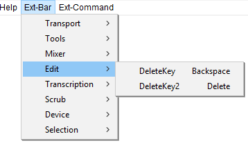

Ext-Bar Menu: Edit
The Ext-Bar > Edit Menu provides menu access to the backspace and delete keys.
- Click, or hover, on any menu item in the image to read about that command. Skip the image
- 
DeleteKey Backspace
Removes the audio data and/or labels that are currently selected without copying them to the Audacity clipboard.
DeleteKey2 Delete
Removes the audio data and/or labels that are currently selected without copying them to the Audacity clipboard.